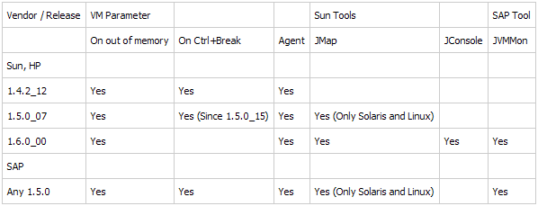

HPROF Binary Heap Dumps
Get Heap Dump on an OutOfMemoryError
One can get a HPROF binary heap dump on an OutOfMemoryError for Sun JVM (1.4.2_12 or higher and 1.5.0_07 or higher), HP-UX JVM (1.4.2_11 or higher) and SAP JVM (since 1.5.0) by setting the following JVM parameter:
-XX:+HeapDumpOnOutOfMemoryError
The heap dump is written to the work directory.
Interactively Trigger a Heap Dump
To get heap dump on demand one can add the following parameter to the JVM and press CTRL + BREAK in the preferred moment:
-XX:+HeapDumpOnCtrlBreak
Alternatively, other tools can be used to acquire a heap dump:
- jmap -dump:format=b,file=<filename.hprof> <pid>
- JConsole (see sample usage in Basic Tutorial)
- Memory Analyzer (see bottom of page)
The following table shows the availability of VM options and tools on the various platforms:
System Dumps and Heap Dumps from IBM Virtual Machines
- IBM DTFJ for 1.4.2 VMs
- IBM DTFJ for Portable Heap Dumps
- IBM SDK for Java (J9) Javadump
- IBM SDK for Java (J9) System dumps
Minimum-required versions of IBM Virtual Machines to generate the dump are IBM JDK 1.4.2 SR12, 5.0 SR8a and 6.0 SR2 though previous versions may generate dumps usable with Memory Analyzer but with inaccurate root information
IBM Java 5.0 and Java 6 Virtual Machine dump options
-Xdump:system+heap+java:events=systhrow+user,filter=java/lang/OutOfMemoryError,request=exclusive+prepwalk+compact
Dump types:
- system - a system process dump. Process system dump files with jextract before loading them into Memory Analyzer. Do not give them a .sdff extension as that is only used for Java 1.4.2 system dumps
- heap - a Portable Heap Dump (PHD) file. Contains all objects and classes, but no thread details
- javacore - a readable file which contains information about class loaders and which can be used by Memory Analyzer when reading PHD files
Events:
- systhrow - when a system generated exception is thrown
- user - the user has typed control-break
Filter:
- java/lang/OutOfMemoryError - the type of the systhrow exception
Request:
- exclusive Stop anything modifying the heap while generating the dump
- prepwalk Make sure the heap is safe to dump
- compact minimise the size of the heap
IBM Java 1.4.2 Virtual Machine dump options
A quick reference for IBM Java 1.4.2 dump options
export JAVA_DUMP_OPTS=ONOUTOFMEMORY(SYSDUMP,HEAPDUMP,JAVADUMP)
set JAVA_DUMP_OPTS=ONOUTOFMEMORY(SYSDUMP,HEAPDUMP,JAVADUMP)
On non-z/OS systems process any system dump files with JExtract to give a .sdff file. On z/OS systems copy the SVC dump file in binary mode to your Eclipse Memory Analyzer system, giving it a .dmp file extension.
Acquire Heap Dump from Memory Analyzer
If the Java process from which the heap dump is to be acquired is on the same machine as the Memory Analyzer, it is possible to acquire a heap dump directly from the Memory Analyzer. Dumps acquired this way are directly parsed and opened in tool.
Acquiring the heap dump is a VM specific. Memory Analyzer comes with several so called heap dump providers - for Sun based VMs (needs a Sun JDK with jmap) and for IBM VMs (needs an IBM JDK). Also extension points are provided for adopters to plug-in their own heap dump providers.
To trigger a heap dump from Memory Analyzer open the menu item.
Depending on the concrete execution environment the pre-installed heap dump providers may work with their default settings and in this case a list of running Java processes should appear:

One can now from which process a heap dump should be acquired, provide a preferred location for the heap dump and press Finish to acquire the dump. Some of the heap dump providers may allow (or require) additional parameters (e.g. type of the heap dump) to be set. This can be done by going to the page of the wizard.
Configuring the Heap Dump Providers
If the process list is empty try to configure the available heap dump providers. To do this press Configure..., select a matching provider from the list and click on it. You can see then what are the required settings and specify them.